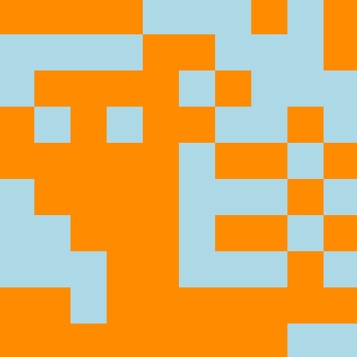
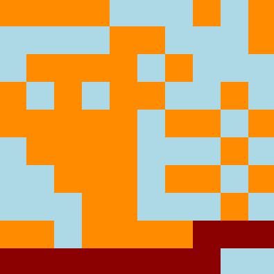

From wikipedia: In physics, chemistry and materials science, percolation refers to the movement and filtering of fluids through porous materials. Original problem was described by Broadbent and Hammersley in 1957: Will the water reach the center of the porous rock when it is submerged under water?
Percolation theory studies such models. It can be modelled in two ways.
Bond percolation
An edge or a bond between two sites may be open with probability p or closed with
probability 1 - p. What is the probability that a path over open bonds exists from one side to another?
Site percolation
Another way to model is to say that a site itself is open with probability p or closed
with probability 1 - p. What is the probability that
a path over open sites exits from one side to another?
Note: in this post connectivity is examied between left and right sides.
Example of site percolation simulation with p = 0.59 (blue site are closed, orange are open):
As you can see, there is no path from left to right over open (orange) sites. But if one site in lower right becomes open
then site percolation is observed:
Critical percolation threshold
In case of infinite network, for any given probability p the probability that an infinite open cluster exists
is either zero or one meaning that there must be critical pc below which the probability
of an infinite open cluster is zero and above is one.
Example of site percolation probability given probability p to enable a single site for n = 400:
//: # ( T = new Dygraph(document.getElementById(“prob_plot”), ) //: # ( “prob.txt”, ) //: # ( { ) //: # ( fillAlpha: 0.50, ) //: # ( axes: { ) //: # ( x: { ) //: # ( axisLabelFormatter: function(x) { ) //: # ( var shift = Math.pow(10, 5) ) //: # ( return Math.round(x * shift) / shift ) //: # ( } ) //: # ( } ) //: # ( } ) //: # ( }); ) //: # ( )
As you can see the critical probability pc for 2D site percolation is between 0.59 and 0.60.
You can play with site percolation here.